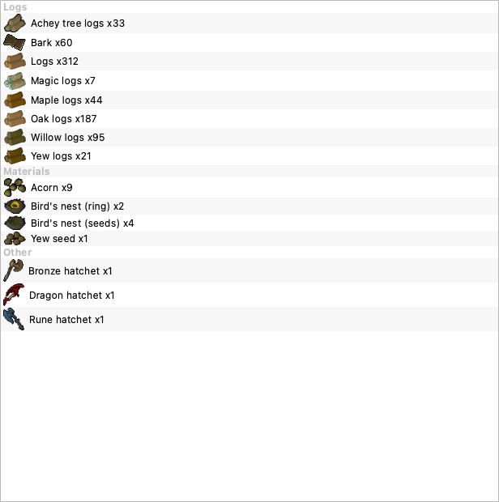

Fetched the Woodcutting parity icons and wired them into the registry so Bank and Stats show real item art instead of blank rows. One batch driver, shared rate limiter, provenance recorded per file. 141 tests green.

Real offscreen-Qt render. Logs reuse the existing trees/ sprites (the row art is the log icon); nests + hatchets came from the new fetch. Every row resolves a correctly-sized icon.
trees/Oak.png already is the Oak-logs sprite, so LOG_IMAGES just re-keys those files by log name. Only Achey + Bark (Hollow) were genuinely missing.File:Ivy.png is a castle-wall screenshot, not an icon. The row already reads "— XP only", so blank is honest. Egg-nests/bird's-eggs likewise (unresolvable + ultra-rare). Nest ring contents reuse crafted ring sprites.trees/woodcuttingitems/woodcuttingitems/woodcuttingitems/